Cox's Bazar Field Trip
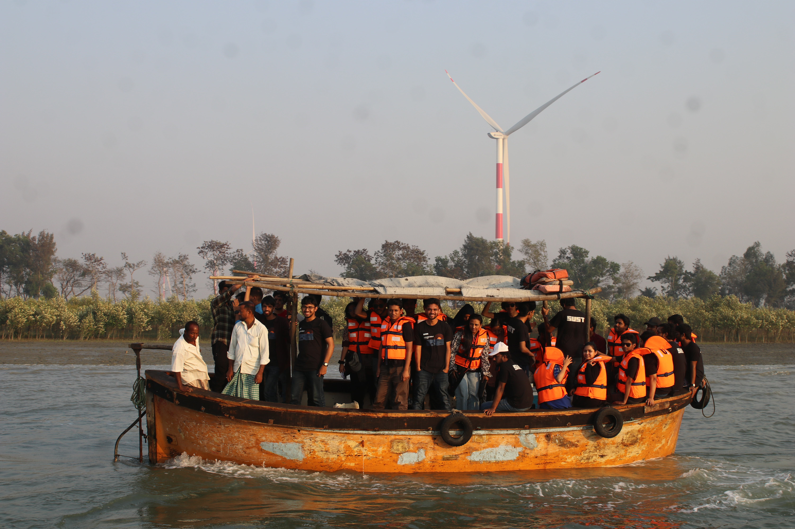
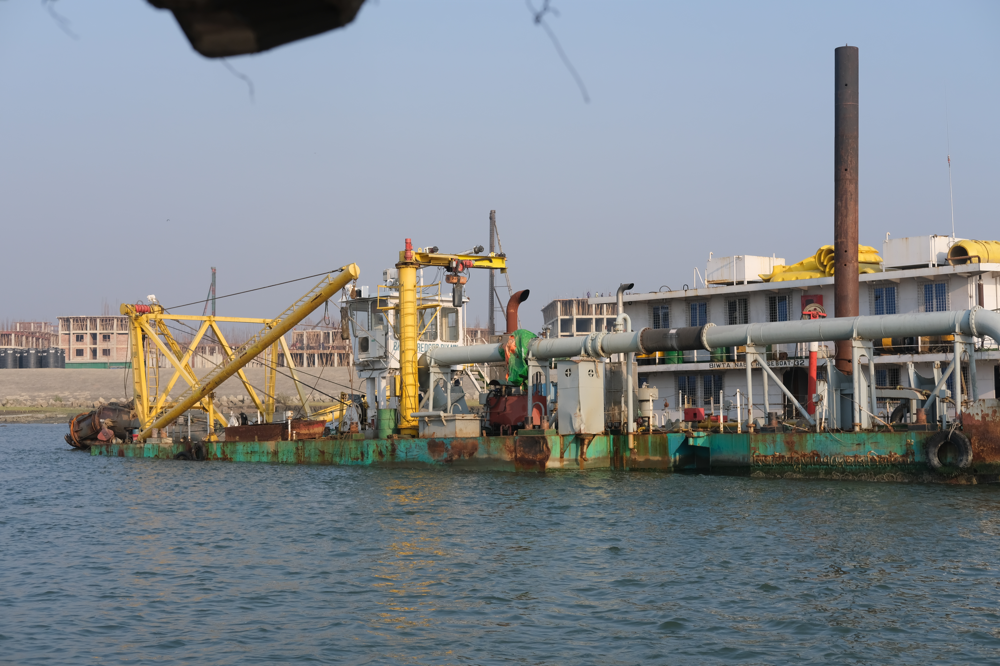
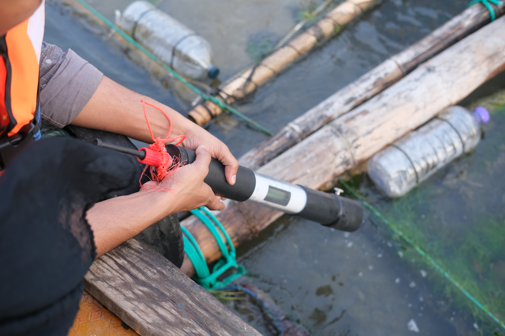
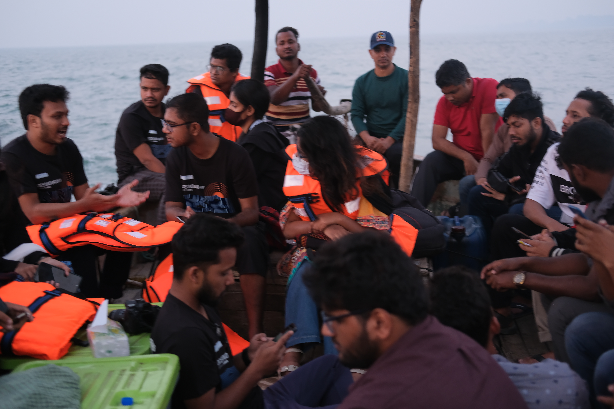
- Plastic waste analysis using quadrant sampling
- Water data collection with mini CTD
- Beach profile measurements and sediment analysis
- Collaborative data collection with research team
Kuakata Field Trip
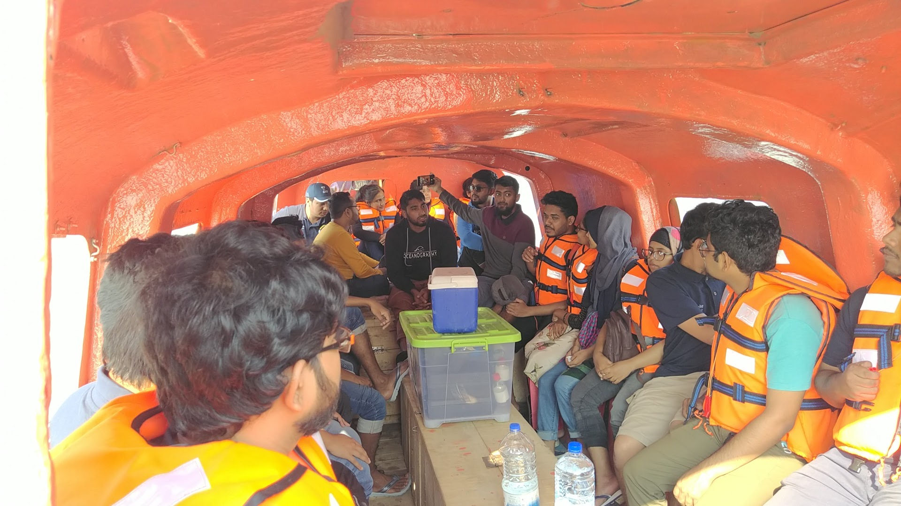
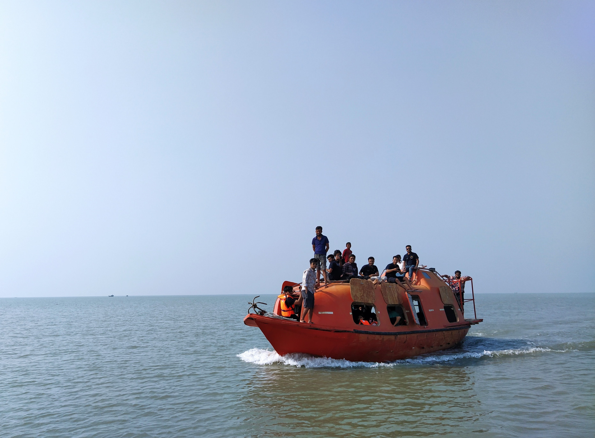
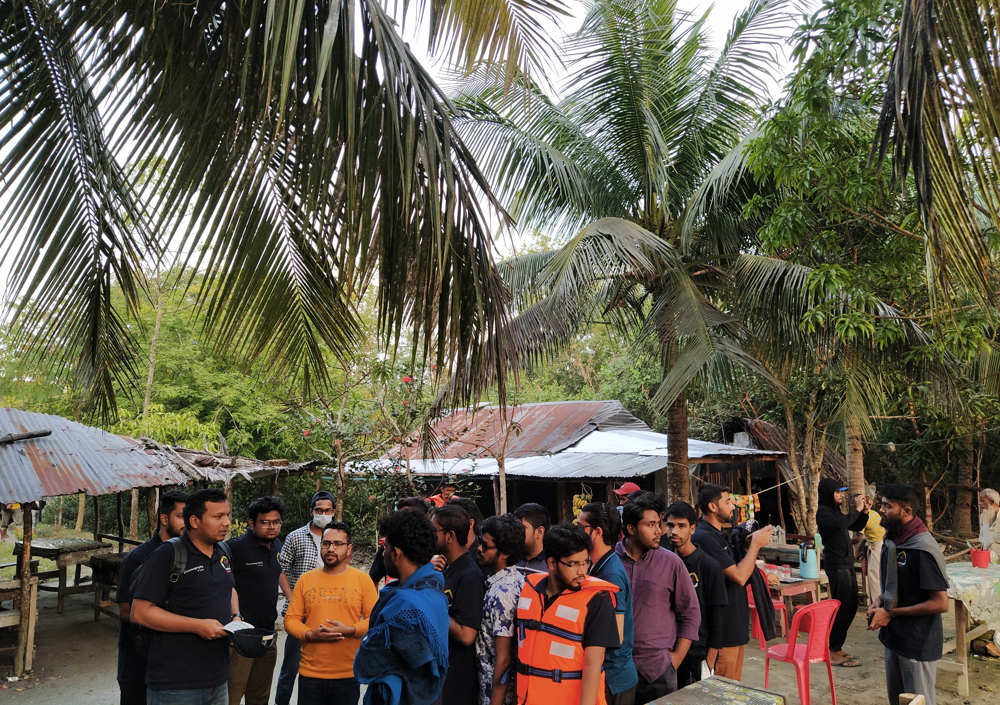
- Beach profile measurements and sediment analysis
- Water quality parameters measurement
- Collaborative data collection with research team
Sundarban Field Trip


- Mangrove ecosystem assessment and biodiversity study
- Water quality parameters measurement in tidal creeks
- Sediment sampling and analysis in intertidal zones
- Documentation of local flora and fauna
- Community interaction and traditional knowledge collection
Saint Martin's Field Trip
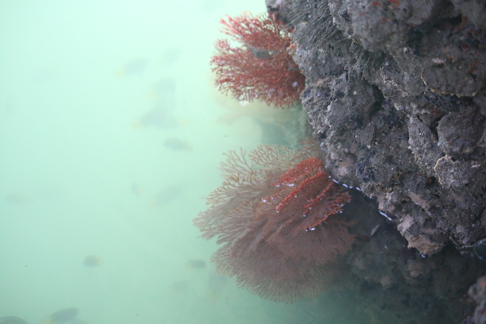
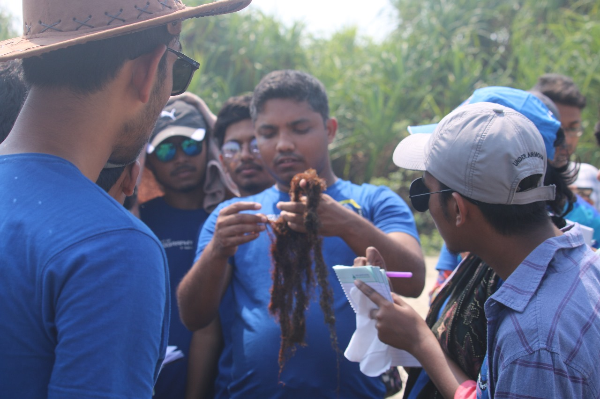
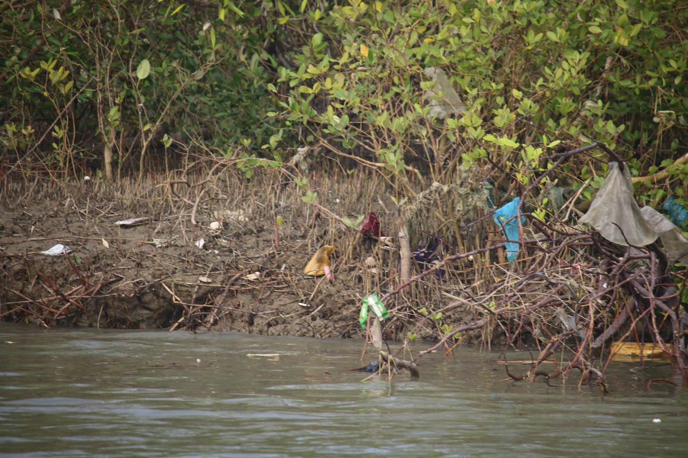
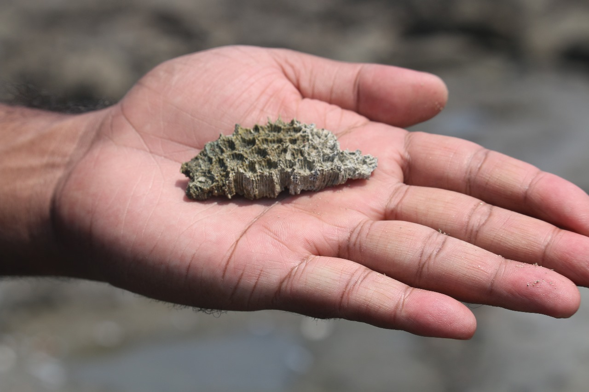
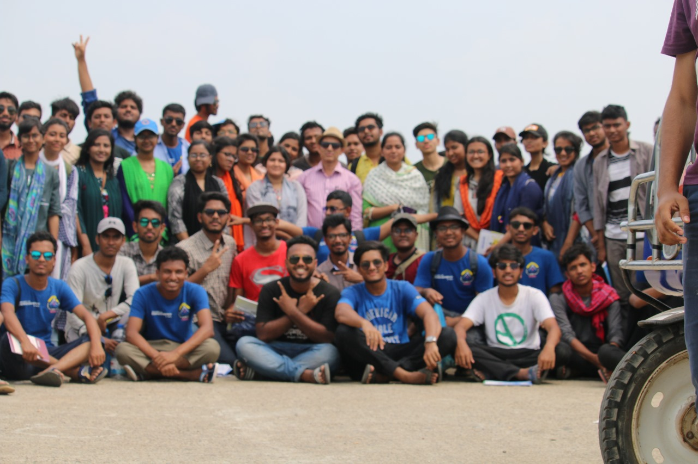
- Explored the unique ecosystem of Saint Martin's Island
- Conducted water quality assessments
- Studied local marine life and coral reefs
- Engaged with local communities for environmental awareness